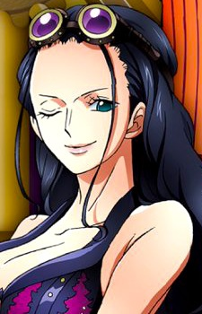
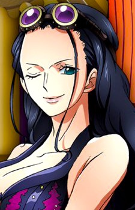

Mayumi Tanaka (born January 15, 1955) is a Japanese actress, voice actress and narrator. She voiced Monkey D. Luffy in One Piece; Ryunosuke Fujinami in Urusei Yatsura; Koenma in Yu Yu Hakusho; Pazu in Laputa: Castle in the Sky; Krillin, Yajirobe and Uranai Baba in Dragon Ball; Kirimaru Settsuno in Nintama Rantarō; Kanna Kirishima in the Sakura Wars series; the title role of TwinBee in Konami's shoot-'em-up series TwinBee; and MegaMan Volnutt in the Mega Man Legends series and related Capcom crossovers. She received the Kazue Takahashi Award at the 5th Seiyu Awards.
 ,
,Kazuya Nakai (Nakai Kazuya, born November 25, 1967) is a Japanese voice actor and narrator who was born in Kobe, Japan.
He plays Roronoa Zoro in One Piece, Toshiro Hijikata from Gintama, Date Masamune from Sengoku Basara, Xiahou Dun and Dian Wei from Dynasty Warriors and Warriors Orochi series, Shinjiro Aragaki from the Persona series, Mugen from Samurai Champloo, Mondo Owada from the Danganronpa series, Ultraman Max in Ultraman Max and Jin Sakai in the Japanese dub of the video game Ghost of Tsushima.
He won a Best Supporting Actor award at the 5th Seiyu Awards in 2011 for his roles in One Piece and Gin Tama.

Akemi Okamura (Okamura Akemi, born on March 12, 1969) is a Japanese voice actress. She performed a song in the NHK program Minna no Uta and currently voices Nami in One Piece.

Mitsuo Yamaguchi (Yamaguchi Mitsuo, born May 23, 1965), better known by his stage name Kappei Yamaguchi (Yamaguchi Kappei), is a Japanese actor, voice actor, and rakugoka affiliated with Gokū and 21st Century Fox. After making his voice acting debut in 1989 as the male version of Ranma Saotome in Ranma ½, Yamaguchi went on to other notable roles, including Inuyasha in Inuyasha and L in Death Note. He currently voices Shinichi Kudo and Kaito Kid in Detective Conan, Usopp in One Piece and Teddie in Persona 4. He is married and has a son, Ryunosuke, and a daughter, Akane.Ryunosuke and Akane are also voice actors, while the latter is also a rakugoka.


Hiroaki Hirata ( Hirata Hiroaki, born August 7, 1963) is a Japanese actor, voice actor and narrator. He is the founder of Hirata Production Japan.
He is best known for voicing Vinsmoke Sanji in One Piece. His other known roles include Sha Gojyo in Saiyuki, Kotetsu T. Kaburagi in Tiger & Bunny, Klein in Sword Art Online, Vergil in the Devil May Cry series, Mutta Nanba in Space Brothers, Leomon in Digimon Adventure, George Kodama in Kaze no Yojimbo and Mr. Kondo in After the Rain. He is also the official Japanese dub-over artist for Johnny Depp, Matt Damon, Noah Wyle and Matt LeBlanc. In addition, he dubbed many roles of Jude Law, Ewan McGregor, and Josh Hartnett.

Ikue Ōtani (born August 18, 1965 in Kashiwazaki, Niigata, Japan) is a Japanese voice actress. She's known for voicing: Konohamaru Sarutobi in Naruto, Mitsuhiko Tsuburaya in Detective Conan, Pikachu in Pocket Monsters and Tony Tony Chopper in One Piece.
Yuriko Yamaguchi (Yamaguchi Yuriko, born November 21, 1965) is a Japanese voice actress and narrator. She was previously affiliated with Vi-Vo and is currently affiliated with Aoni Production. Her major roles include, Nico Robin in One Piece, Ritsuko Akagi in Neon Genesis Evangelion Sonia in Eureka Seven and Nurse Joy in Pokémon.
 

Kazuki Yao was born on 17 June 1959 in Ishikawa, Japan. He is an actor, known for Ninja Sentai Kakuranger (1994), Hikonin Sentai Akibaranger (2012) and Fullmetal Alchemist: Brotherhood (2009). He is married to Natsuki Hayashi. He was previously married to Mîna Tominaga.


Chō ( born Shigeru Nagashima (Nagashima Shigeru?), December 15, 1957, Kōnosu, Saitama, Japan) is a Japanese voice actor from Kōnosu, Saitama. His former stage name was Yūichi Nagashima (Nagashima Yūichi?). He is a graduate of the Nishogakusha University Department of Literature and received training at Bungakuza's research establishment and the Seinenza Theater Company before attaching himself to Production Baobab in 1986. He transferred to the Tokyo Actor's Consumer's Cooperative Society in 2007. On August 23, 2006, he changed his stage name to Chō after his character in Tanken Boku no Machi. His hobbies include badminton and jogging, and he is a licensed teacher in calligraphy.